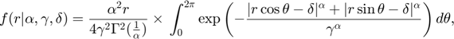
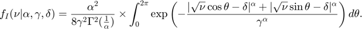

The main script for SAR image modelling with the GG-Rician distribution.
The GG-Rician probability density function for modeling an amplitude signal is given below [1]

The GG-Rician probability density function for modeling an intensity signal is given below [1]

The main function uses three main global structure type variables. All of which has various elements. All details are given below.
Parameters : GLOBAL VARIABLE. A structure type variable which stores various parameters given below:
- outSourceImage : Set to 1 for loading SAR image from computer. Set to 0, otherwise.
- distType : Refers to the type of simulation. 1: GG-Rician Amplitude modelling of example SAR image. 2: GG-Rician Intensity modelling of example SAR image. 3: GG-Rician Amplitude modelling of synthetically generated data.
- dsTargetSize : Downsampling target sample size.
- synDataLength : Synthetically generated data sample size. (Only active when Parameters.distType = 3)
- scale : Synthetically generated data scale parameter. (Only active when Parameters.distType = 3)
- shape : Synthetically generated data shape parameter. (Only active when Parameters.distType = 3)
- location : Synthetically generated data location parameter. (Only active when Parameters.distType = 3)
- epsilon : Hyperparameter for location parameter proposal distribution. (Move M_1)
- Xi_sq : Hyperparameter for scale parameter proposal distribution. (Move M_2)
- eta : Hyperparameter for shape parameter proposal distribution. (Move M_3)
- P_M1 : Probability of Move M_1
- P_M2 : Probability of Move M_2
- P_M3 : Probability of Move M_3
- AllP : CDF of move probabilities
- NumberofIterations : Number of iterations for MCMC.
- burnInPeriod : Burn-In sample size.
- Image : Full-size SAR Image. Refers to the 1D synthetically generated data for distType=3.
- DSInput : Down-sampled input for MCMC.
- dsKL : KL-divergence value between the full-size SAR Image and DSInput.
- dsSize : Final down-sampled data size.
- noDSInput : Another parameter to store full-size SAR Image.
- Data : Input data for the algorithm.
Output : GLOBAL VARIABLE. A structure type variable which stores various output variables given below:
- Location_delta : Instantenous location parameter estimates.
- Scale_gamma : Instantenous scale parameter estimates.
- Shape_alpha : Instantenous shape parameter estimates.
- SelectedMove : Stores selected move type for each MCMC iteration.
- AcceptanceRatio : Stores calculated acceptance ratio values for each MCMC iteration.
- RatioXX : Stores each specific ratio values in acceptance ratio expressions. Has several forms such as Ratio1, Ratio21.
Results : GLOBAL VARIABLE. A structure type variable which stores variables given below:
- estDelta : Posterior mean estimation for the location parameter.
- estGamma : Posterior mean estimation for the scale parameter.
- estAlpha : Posterior mean estimation for the shape parameter.
- KLdiv : Performance metric. Shows corresponding KL divergence value for the modeling.
- KSscore : Performance metric. Shows corresponding KS Score value for the modeling.
alpha : Instantenous proposal for the shape parameter.
gamma : Instantenous proposal for the scale parameter.
delta : Instantenous proposal for the location parameter.
file, path, prompt, dlgtitle, dims, definput, answer, opts : These are variables for pup-up dialog box. When user choses distType = 3, or ourSourceImage = 1, a specific dialog box pops-up and asks user to enter corresponding parameters.
For the functions dsSARImage(.), logLikelihoodCalculation(.), instantenousPlotting(.), and performancePlotting(.), please visit specific function's .m file.
LICENSE
This program is free software: you can redistribute it and/or modify it under the terms of the GNU General Public License as published by the Free Software Foundation, either version 3 of the License, or (at your option) any later version.
This program is distributed in the hope that it will be useful, but WITHOUT ANY WARRANTY; without even the implied warranty of MERCHANTABILITY or FITNESS FOR A PARTICULAR PURPOSE. See the GNU General Public License for more details.
You should have received a copy of the GNU General Public License along with this program. If not, see https://www.gnu.org/licenses/.
Copyright © Oktay Karakus,PhD o.karakus@bristol.ac.uk University of Bristol, UK June, 2020
REFERENCE
[1] O Karakus, E Kuruoglu and A Achim. "A Generalized Gaussian Extension to the Rician Distribution for SAR Image Modeling." IEEE Transactions on Geoscience and Remote Sensing (2021).
[2] O Karakus, E Kuruoglu and A Achim. "Modelling Sea Clutter In SAR Images Using Laplace-Rician Distribution," ICASSP 2020 - 2020 IEEE International Conference on Acoustics, Speech and Signal Processing (ICASSP), Barcelona, Spain, 2020, pp. 1454-1458."